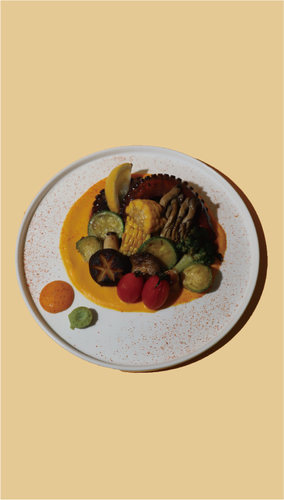
대표 · 추천
sea! 돌문어 스테이크
간장에 졸인 버터 문어, 달콤한 당근 퓨레, 다양한 야채구이
29,800원해운대 맛집 · 동백역 이탈리안 레스토랑
감자와 고구마로 매일 직접 빚는 뇨끼.
간장 버터에 천천히 졸인 돌문어.
해운대 동백역에서 도보 5분.
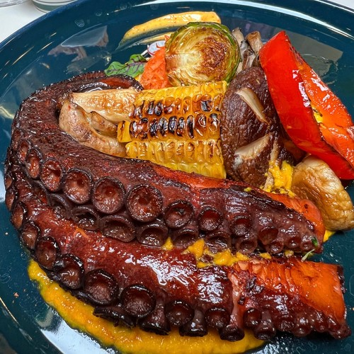
스미스씨네 농장은 부산 해운대구 동백역 인근(해운대로483번가길 31, 지하 1층)에 있는 이탈리안 레스토랑입니다. 수제 뇨끼와 sea! 돌문어 스테이크, 나폴리 스타일 피자가 대표 메뉴이며, 연중무휴 11:00–22:00 영업, 실내 무료 주차 15대, 웰컴키즈존과 콜키지(병당 15,000원)를 운영합니다. 2025 KCIA 한국소비자산업평가 우수업체로 선정되었습니다.
가장 많이 찾으시는 네 가지.

간장에 졸인 버터 문어, 달콤한 당근 퓨레, 다양한 야채구이
29,800원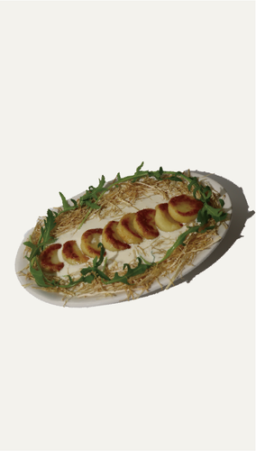
감자로 만든 수제 뇨끼, 고르곤 치즈, 크림 소스
23,800원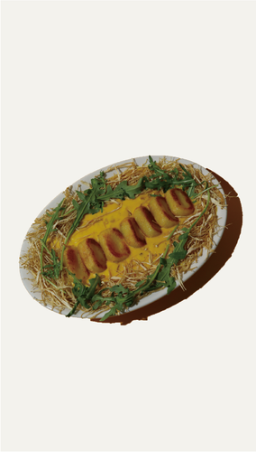
고구마로 만든 수제 뇨끼, 단호박 크림 소스
23,800원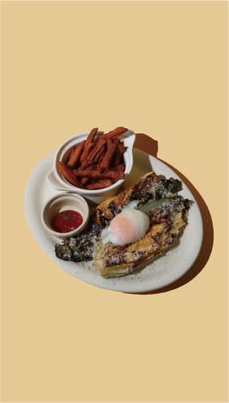
시저 드레싱, 수란, 고구마 튀김
16,800원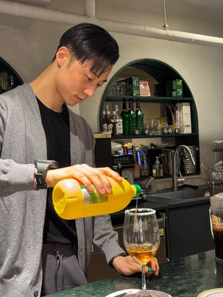
뇨끼는 감자와 고구마를 삶아 그날 반죽합니다. 돌문어는 간장에 재워 버터로 천천히 졸입니다. 단호박 치즈케이크에는 설탕과 밀가루를 넣지 않습니다.
신선한 재료와 정성 어린 음식, 그리고 편안한 서비스. 스미스씨네 농장이 지켜온 세 가지입니다.
전체 메뉴 보기해운대 해수욕장, 벡스코, 동백섬에서 가까운 이탈리안. 상황별로 골라보세요.
아치형 통로와 은은한 조명의 지하 1층 홀. 콜키지가 가능해 와인 한 병 들고 오기 좋고, 밤 9시 이후엔 나이트 메뉴로 2차까지 이어집니다.
웰컴키즈존, 아기의자 5개, 유아식기, 아이들 메뉴. 실내 무료 주차 15대로 유모차와 짐이 있어도 편합니다.
벡스코역에서 825m. 넓은 홀에서 단체석과 대관이 가능해 행사 후 회식, 학회 뒤풀이에 맞습니다.
동백역 368m, 해운대 해수욕장과 동백섬 산책 뒤 들르기 좋은 거리. 연중무휴라 명절·공휴일에도 열려 있습니다.
아치형 초록 간판 아래, 넓고 아늑한 지하 1층.
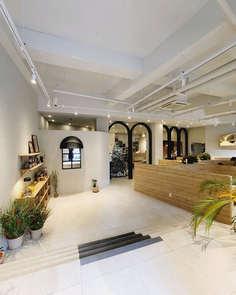
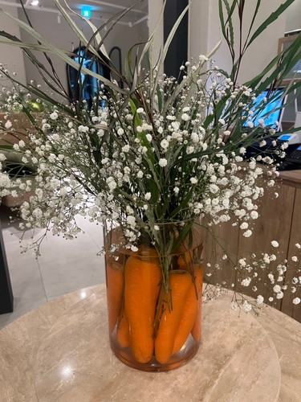
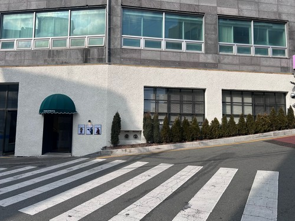
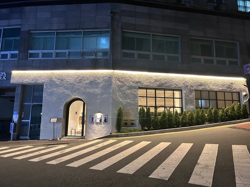
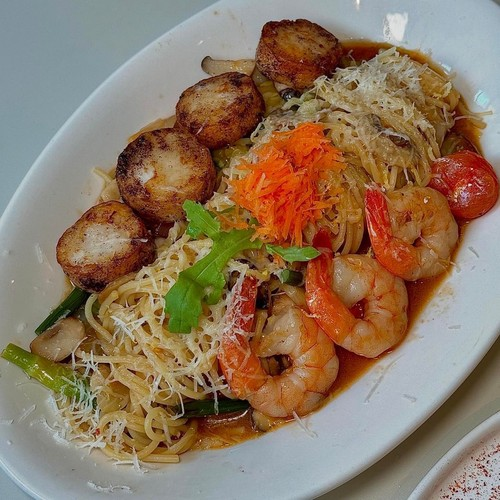
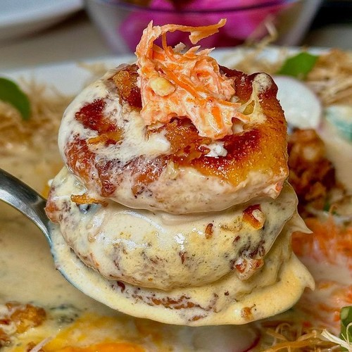
가족도, 모임도, 데이트도 편하게.
매장 건물 실내 주차장. 건물 양옆 ‘출차주의’ 표지판 쪽으로 진입한 뒤, 정문 초록색 간판 아치형 입구로 들어오세요.
와인 반입 가능. 매장 와인 리스트도 준비되어 있습니다.
아기의자 5개, 유아식기, 아이들 메뉴. 가족 모임에 좋습니다.
넓은 홀에서 단체 모임과 대관이 가능합니다. 전화로 문의해 주세요.
매장 내 와이파이를 제공합니다.
밤 9시 이후 안주·주류 중심의 별도 메뉴판을 운영합니다.
부산광역시 해운대구 해운대로483번가길 31 양지아파트 지하 1층에 있습니다. 부산 지하철 2호선 동백역에서 368m, 벡스코역에서 825m 거리입니다.
연중무휴로 매일 11:00부터 22:00까지 영업하며 라스트 오더는 21:00입니다. 밤 9시 이후에는 나이트 메뉴(안주·주류)를 운영합니다. 브레이크 타임은 없습니다.
캐치테이블 또는 네이버 예약에서 온라인 예약할 수 있습니다. 예약이 마감된 경우에도 매장에 직접 방문하면 일반석으로 입장 가능합니다. 주말은 만석이 잦아 예약을 권장합니다.
네. 매장 건물 실내 주차장에 최대 15대까지 무료 주차할 수 있습니다. 건물 양옆 ‘출차주의’ 표지판 쪽으로 진입한 뒤, 정문의 초록색 간판 아치형 입구로 들어오시면 됩니다.
네. 웰컴키즈존으로 아기의자 5개와 유아식기가 준비되어 있으며 아이들 메뉴도 있습니다.
네. 와인 콜키지는 병당 15,000원입니다.
sea! 돌문어 스테이크(29,800원), 크림치즈 감자뇨끼(23,800원), 단호박 고구마 뇨끼(23,800원), 알배추 샐러드(16,800원)가 대표 메뉴입니다. 마르게리따 피자(23,800원)도 인기가 많습니다.
스미스씨네 농장은 해운대 동백역 인근의 웰컴키즈존 이탈리안 레스토랑입니다. 아기의자 5개, 유아식기, 아이들 메뉴가 있고 실내 무료 주차 15대를 갖추고 있어 가족 모임에 적합합니다.
네. 단체석과 대관이 가능합니다. 인원과 일정은 매장(010-2901-5663)으로 문의해 주세요.
주말은 만석이 잦습니다. 미리 예약해 주세요.